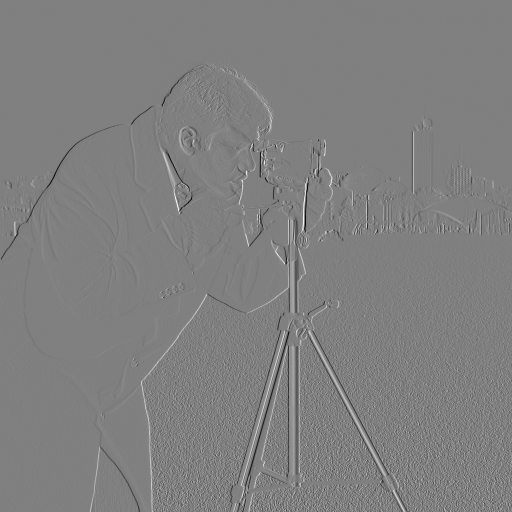
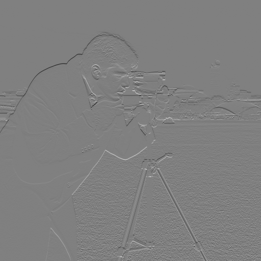
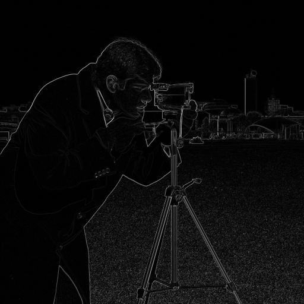
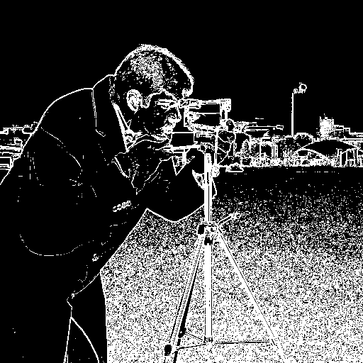
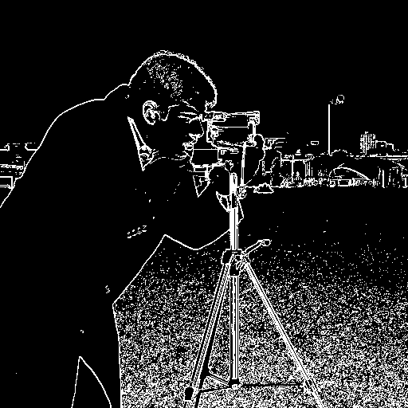
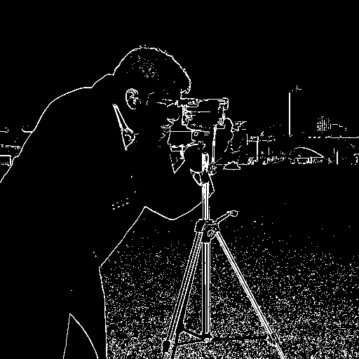
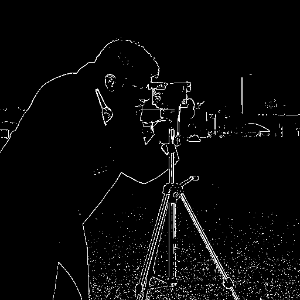
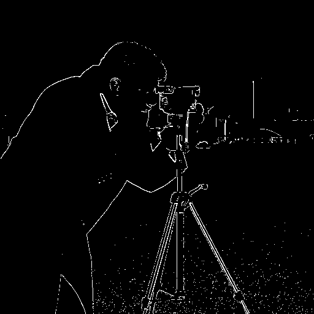
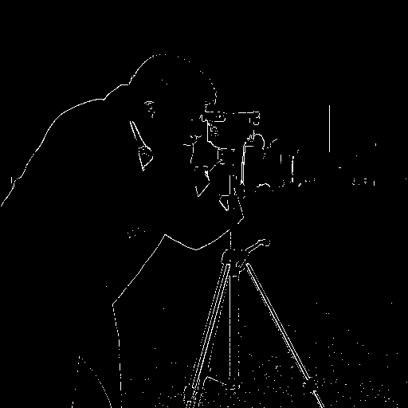

and Frequencies!
SYDE 671 · Assignment 2 · James Xie
PART 1.2:
FINITE DIFFERENCE
OPERATOR
I find edges by measuring brightness changes in two directions. I then try different thresholds to keep strong edges and remove weaker texture.
01 / From intensity to gradients







I use the 512 × 512 grayscale image at its original size. Pixel values are float64 from 0 to 1. I do not blur or adjust the image first. I apply the difference filters with SciPy, which is allowed in Part 1.2.
Ix = I * [1, −1] · Iy = I * [1, −1]T
M = √(Ix² + Iy²)
Away from the borders, Ix[y,x] = I[y,x] − I[y,x−1] and Iy[y,x] = I[y,x] − I[y−1,x]. The first finds vertical edges; the second finds horizontal edges. The magnitude combines both directions and is always nonnegative.
Both derivative pictures use the same scale, ±0.741176, with gray for zero. The magnitude picture uses a fixed 0 to 1 display range. I apply the threshold to the saved float values, not to the displayed PNG.
02 / Choosing the edge threshold
Edge[y,x] = M[y,x] > 0.20

I choose T = 0.20. At 0.05 and 0.10, many grass pixels are marked as edges. At 0.15, there is still scattered texture. At 0.20, more grass disappears while much of the shoulder, arm, camera and tripod remains. At 0.25 and 0.30, these outlines break up more. The selected map still has grass and misses weak edges. A threshold alone cannot separate every object edge from texture.
The threshold sweep












| Threshold | Edge pixels | Image fraction |
|---|---|---|
| 0.05 | 68,846 | 26.26% |
| 0.10 | 33,426 | 12.75% |
| 0.15 | 16,641 | 6.35% |
| 0.20 | 8,888 | 3.39% |
| 0.25 | 5,130 | 1.96% |
| 0.30 | 3,266 | 1.25% |
The percentages show how many pixels are marked as edges. They do not measure accuracy because I do not have labeled edges to compare against. A lower threshold keeps more detail and grass texture. A higher threshold removes clutter but also breaks real outlines. I choose the threshold by looking at this image.
03 / Method, boundaries and verification
I use mode='same' to keep the image size and boundary='symm' to reflect pixels at the border. With these filters, the leftmost x derivative and topmost y derivative are zero. This avoids the false outer edges caused by zero padding in Part 1.1.
DX = np.array([[1., -1.]])
DY = DX.T
def gradients(image):
"""Return signed x/y backward differences and Euclidean magnitude.
Symmetric boundary extension avoids a spurious edge against zero.
Convolution flips the kernel: interior dx[y,x] = I[y,x] - I[y,x-1].
"""
image = np.asarray(image, dtype=np.float64)
if image.ndim != 2 or not image.size or not np.isfinite(image).all():
raise ValueError('Expected a nonempty, finite 2D grayscale array.')
dx = convolve2d(image, DX, mode='same', boundary='symm')
dy = convolve2d(image, DY, mode='same', boundary='symm')
magnitude = np.sqrt(dx ** 2 + dy ** 2)
return dx, dy, magnitude
def threshold_edges(magnitude, threshold):
"""An edge is a raw gradient magnitude strictly greater than threshold."""
magnitude = np.asarray(magnitude, dtype=np.float64)
if magnitude.ndim != 2 or not magnitude.size or not np.isfinite(magnitude).all() or (magnitude < 0).any():
raise ValueError('Expected a nonempty, finite, nonnegative magnitude array.')
if not np.isfinite(threshold) or threshold < 0:
raise ValueError('Threshold must be finite and nonnegative.')
return magnitude > threshold
Six unit tests check the two directions, signed differences, constant-image borders, gradient magnitude, the strict threshold rule and invalid inputs. I also check that the saved edge maps match the saved magnitude values.
Image source
I use the camera image from the official scikit-image repository, v0.25.2. The documentation credits Lav Varshney and lists it as CC0. This is the newer 512 × 512 image. The original ResearchGate request used an older 256 × 256 image, but its download was blocked. The official replacement was approved.

What I learned
I learned that difference filters find texture as well as object outlines. Using both directions helps find more edges, but a threshold cannot tell grass texture from an important edge. In Part 1.3, I try blurring the image first. Looking at the camera and tripod helped me judge which useful edges were being lost. I would not reuse the same threshold on every image without checking the result.
Algorithm source · Experiment source · Unit tests · Parameters and measurements · Raw arrays · Source record
Python 3.14.3 · NumPy 2.4.2 · SciPy 1.17.0 · Pillow 12.1.0